00 · My Role
My Contributions
This was a team project — here is specifically what I owned
Research
Content Inventory
Audited the existing Open Books site — cataloguing every page, identifying redundant links, dead links, and unclear organizational patterns that were hurting the user experience.
Evaluation
Heuristic Analysis & Recommendations
Evaluated two core task flows — donating and purchasing a book — against established UX heuristics. Scored each task and developed actionable design recommendations based on findings.
Design
Wireframes & Final Presentation
Translated heuristic findings into wireframes for both task flows in Figma. Led the final presentation — synthesizing the team's research into a cohesive narrative for stakeholders.
Tools Used
Figma
Used for all wireframing — creating annotated task flows for both the donation and book purchase redesigns.
Tools Used
UXTweak
Used to run the card sort and tree test studies — collecting and analyzing participant data across multiple rounds.
Team
Collaborative Project
Group 2 — Al Rajala (card sort lead, tree test analysis, sitemap), Kaleigh Spitzer (card sort creation, heuristic analysis), Laurie Williams (content inventory, heuristics, wireframes, presentation).
01 · Overview
The Problem
Confusing navigation was limiting donations, volunteer sign-ups, and community engagement
The Client
Open Books Chicago
A Chicago-based nonprofit working to make reading more accessible for kids and families through literacy programs, book donations, and community engagement.
The Problem
Confusing IA
Programs were listed outside the programs tab. Support actions were buried in the about section. Not all locations appeared in main navigation. Location info mixed with shopping info.
The Objective
Intuitive Navigation
Make the site navigation more intuitive to increase support and engagement — so donors can donate, volunteers can sign up, and community members can easily find programs.
02 · Users
User Profiles
Three distinct audiences with different goals on the Open Books site
Jamee
Donor · Book Drop-off
Jamee's son recently moved into his college dorm and she's downsizing, including getting rid of some books. Through the website, she learns how the books she plans to donate will support literacy programs, checks condition requirements, and finds a nearby drop-off location.
Kyle
Donor · Financial Gift
Kyle's new year's resolution is to give back. He remembers being in the Open Books reading program when he was younger. He'd like to give back through a donation and uses the website to do so.
Devon
Educator · Book Purchase
Devon is a teacher looking for new books for her classroom. She wants to buy books but also support a great cause. Through the website, she learns her purchase will support the Open Books literacy program and continues to purchase classroom books online.
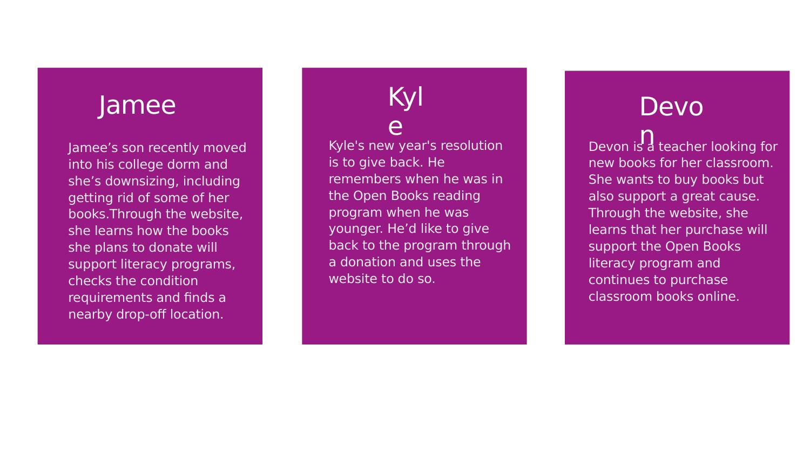
03 · Content Inventory
What We Found
Key issues identified in the existing site structure
Issue 01
Redundant Links
The site had an online shopping link for each store location, but all led to the same destination. These could be condensed into one.
Issue 02
Dead Links
Several links were no longer active and led to dead ends — creating friction for users trying to navigate the site.
Issue 03
Unclear Organization
Programs listed outside the programs tab. Support actions buried in the about section. Not all locations visible in main navigation.
Proposed Fix
Six Clear Categories
About · Programs · Locations · Support · Shop · Contact — each with a clear, distinct purpose and consistent placement.
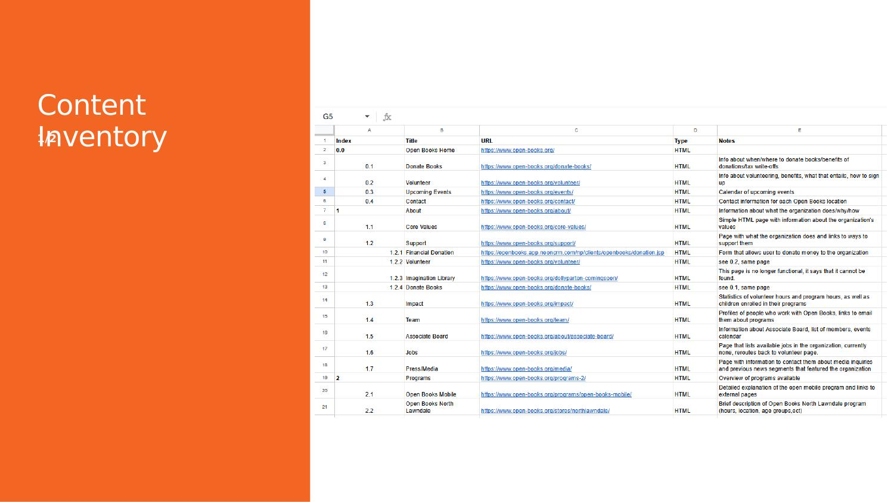
About
General information about the organization, its mission, and how to contact them.
Programs
All program information condensed into one location — no more scattered tabs.
Locations
All location information in one place, separated from online shopping.
Support
All support actions — donate, volunteer, give books — clearly labeled and accessible.
Shop
Online shopping separated from location information for clarity.
Contact
General inquiries in a single, easy-to-find location.
04 · Card Sort
Card Sort Results
Closed sort across three rounds — iterating on naming and structure after each
Round 1
First Closed Sort
Closed Sort · 5 Participants · Success = 80%+ agreement
Successful Cards
- Reading Buddies → Programs
- Parent & Caregiver Workshops → Programs
- Donate → Support
- Online Store → Shop
- General Inquiries → Contact
Adjustments Made
- "Access to Books" → renamed "Grant Information"
- "Buy Books for Kids" → renamed "Gift a Book"
- "Support" → renamed "Support Us" for clarity
Round 2
Second Closed Sort
Closed Sort · 10 Participants · Success = 80%+ agreement
Successful Cards
- Grant Information → About
- Donate → Support
- Volunteer → Support
- Sensory Saturdays → Programs
- After School Program → Programs
Adjustments Made
- "Gift a Book" → renamed "Books for Kids"
- "Open Books Mobile" → renamed "Open Books on Wheels"
05 · Tree Test
Tree Test Results
Validating the sitemap with real users across two rounds
Round 1
Initial Validation
5 Participants
Strong results led us to retest rather than make unfounded changes.
Round 2
Confirmation Round
9 Participants (1 excluded for insufficient effort)
Results confirmed the sitemap is navigable. Indirect paths suggest some users explored rather than navigated directly.
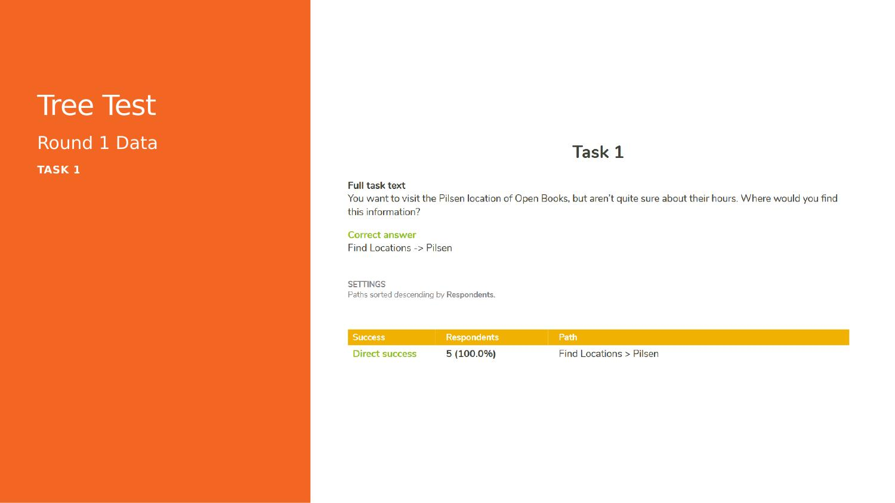
06 · Sitemap
Final Sitemap
Action-based top level, topical second level — informed by card sort consensus
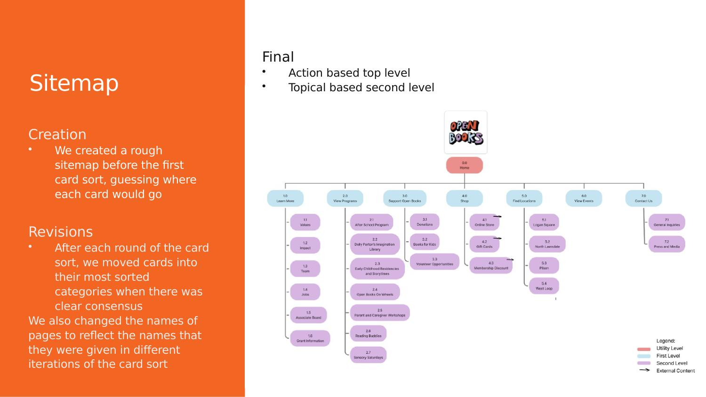
Sitemap overview — creation and revision process
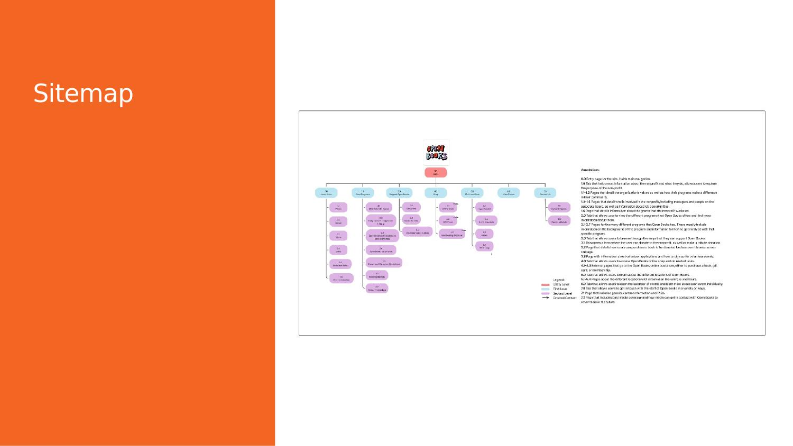
Final sitemap — full diagram
07 · Heuristics
Heuristic Analysis
Evaluating two core tasks against established UX heuristics
Task 1
Donate to the Nonprofit
Issues Identified
- Lack of feedback for form errors
- Doesn't follow mental models for donation
- Tribute donations not explained
Recommendations
- Add real-time feedback for incorrect information
- Add payment information input to the form
- Link to description of tribute donations
Task 2
Purchase a Book
Issues Identified
- Visually inconsistent layouts on same page
- Misleading symbols create confusion
- No undo/redo support
Recommendations
- Add feedback for incorrect information
- Apply consistent visual styling throughout
- Include undo function in the purchase flow
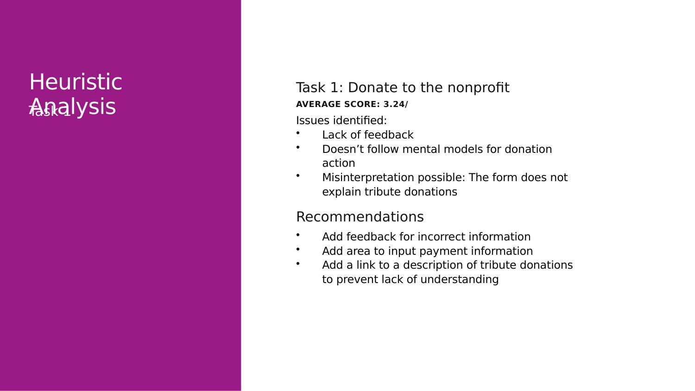
Heuristic evaluation — Task 1 (Donate)
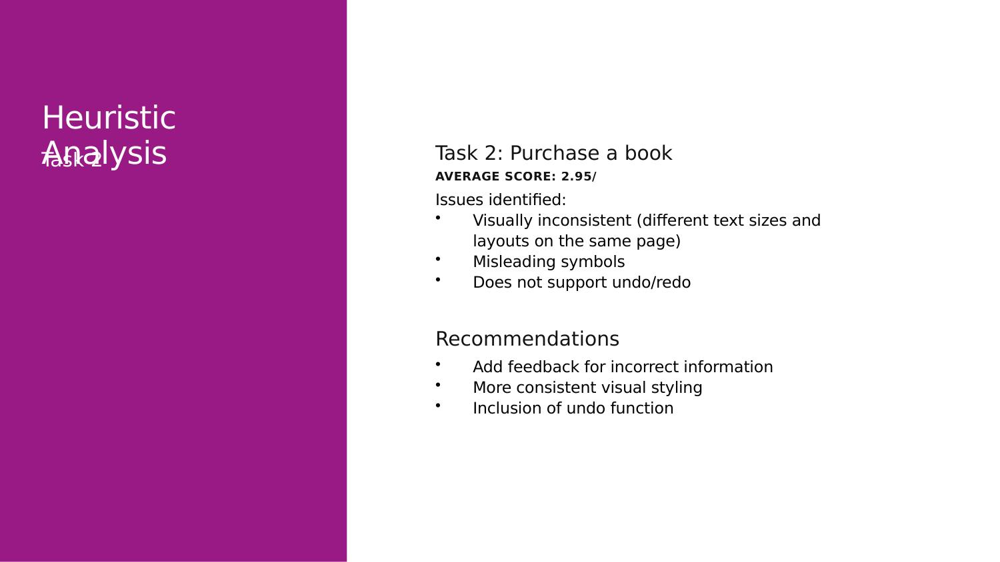
Heuristic evaluation — Task 2 (Purchase)
08 · Wireframes
Redesign Direction
Applying heuristic findings to create clearer, more guided task flows
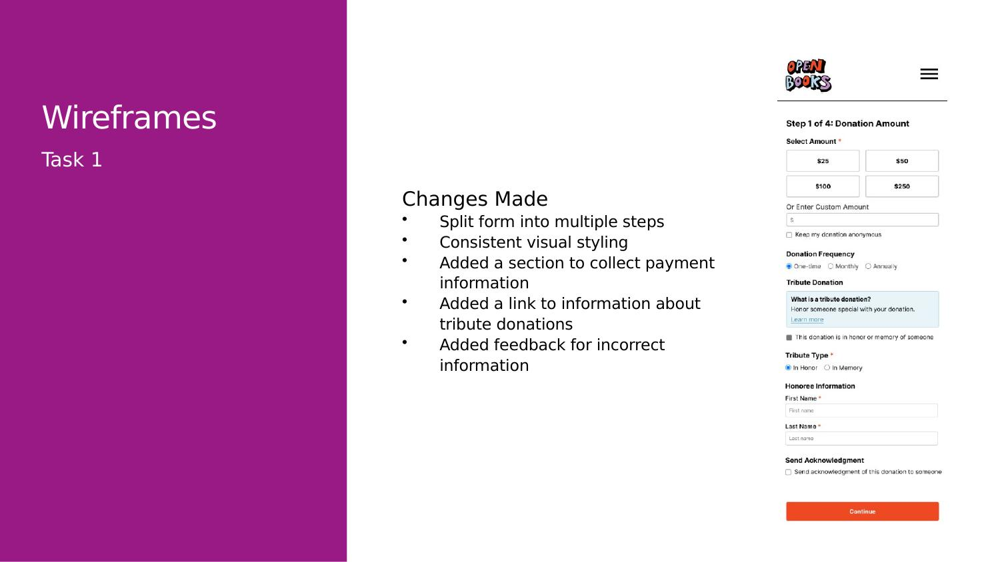
Task 1 — Donation wireframe
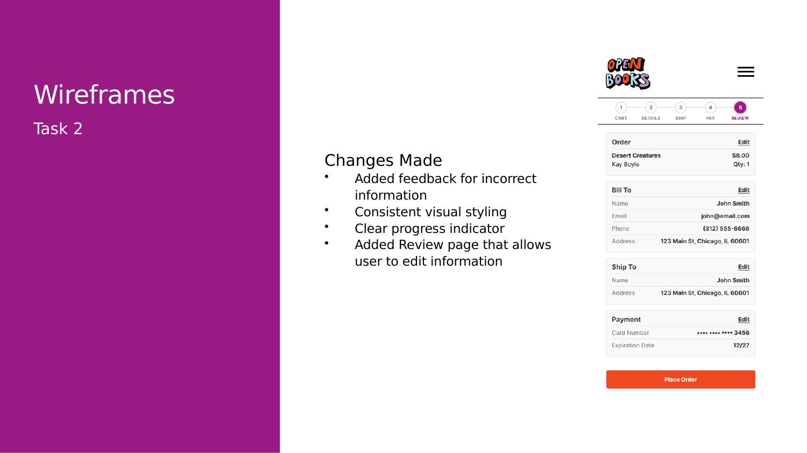
Task 2 — Book purchase wireframe
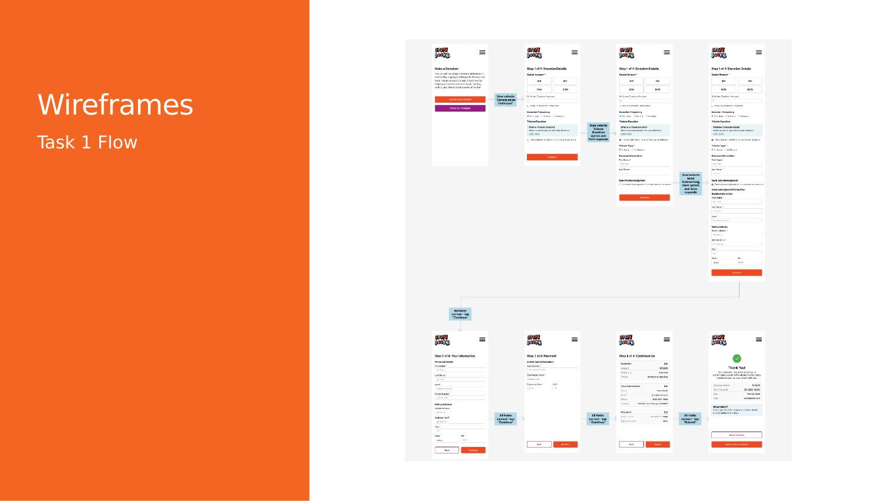
Task 1 — Full flow diagram
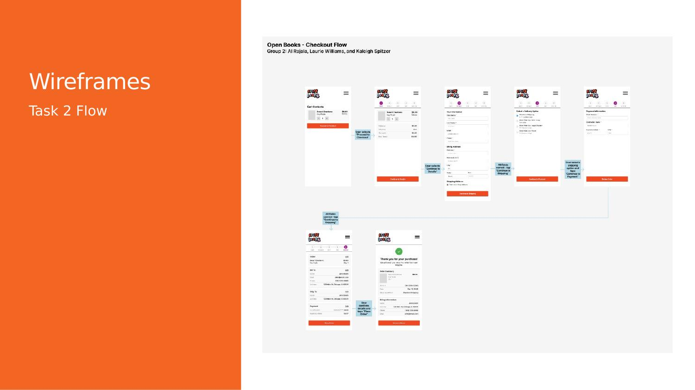
Task 2 — Full flow diagram
09 · Takeaways
What We Learned
Key insights from the full IA research process
Card sort data is only as good as the card names
Ambiguous card names led to scattered sorting. Renaming cards between rounds dramatically improved consensus. Language matters as much as structure.
Strong results are still worth retesting
Round 1 tree test results were strong enough to ship — but we retested anyway. Round 2 confirmed the sitemap and revealed nuance around indirect navigation paths.
Participant pool quality affects data quality
One participant was excluded for completing the study in 30 seconds with all wrong answers — a reminder that extra credit pools can introduce low-effort responses.
Next steps: another tree test + usability testing
We'd retest with a higher-effort participant pool, analyze new data to further iterate on the sitemap, and move into full usability testing on the wireframes.
10 · Impact
Outcome
What this project demonstrated about research-driven IA design
Result
9/9 Task 1 Success Rate
The final sitemap achieved a 100% success rate on the primary task (finding location hours) in Round 2 tree testing — up from 5/5 in Round 1, validating the IA structure holds across larger participant groups.
Result
Clearer Navigation Structure
By consolidating six clearly-defined top-level categories — About, Programs, Locations, Support, Shop, Contact — we eliminated redundant links, dead ends, and buried support actions that were preventing users from engaging with the nonprofit.
Skill Demonstrated
Full IA Process End-to-End
This project demonstrates the ability to take a real-world site from audit through research, testing, and wireframing — using Figma for design and UXTweak for participant studies across multiple iterative rounds.
If Extended
Next Steps
Another round of tree testing with a higher-effort participant pool, full usability testing on the wireframes, and a high-fidelity prototype to validate the redesigned donation and book purchase flows.